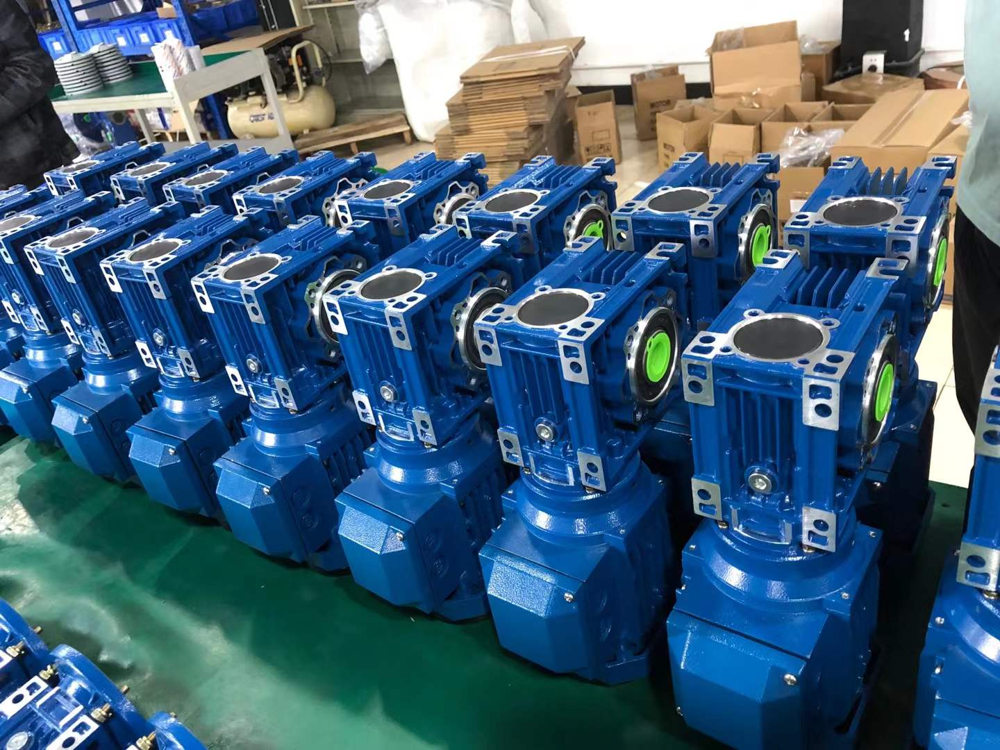

Common Motor-Power Examples by NMRV Gearbox Size
Customers often ask whether a specific NMRV gearbox can be used with a 0.37 kW, 0.75 kW or 1.5 kW motor. The table below is for preliminary comparison only. It is not an approved rating for every ratio, mounting position or operating condition.
| NMRV gearbox | Motor-power examples |
|---|---|
| NMRV030 | 0.06 / 0.09 / 0.12 kW |
| NMRV040 | 0.12 / 0.18 / 0.25 / 0.37 kW |
| NMRV050 | 0.18 / 0.25 / 0.37 / 0.55 kW |
| NMRV063 | 0.37 / 0.55 / 0.75 / 1.1 kW |
| NMRV075 | 0.55 / 0.75 / 1.1 / 1.5 kW |
| NMRV090 | 0.75 / 1.1 / 1.5 / 2.2 kW |
| NMRV110 | 1.5 / 2.2 / 3.0 kW |
| NMRV130 | 2.2 / 3.0 / 4.0 kW |
| NMRV150 | 3.0 / 4.0 / 5.5 kW |
Can a 0.75 kW Motor Be Used with an NMRV040?
We do not recommend selecting an NMRV040 with a 0.75 kW motor without a detailed capacity check. A larger motor does not automatically increase the gearbox's allowable output torque. If the transmitted load exceeds the rating, excessive temperature rise, accelerated wear or mechanical damage can result.
Before considering this combination, confirm the required output torque, reduction ratio, operating hours and starts. A larger gearbox may be more suitable for the application.
Is an NMRV050 Suitable for a 0.37 kW Motor?
An NMRV050 gearbox with a 0.37 kW four-pole motor is a common combination to consider for light industrial equipment, provided that the selected ratio and operating conditions are within the gearbox ratings.
| Parameter | Example specification |
|---|---|
| Gearbox | NMRV050 |
| Motor power | 0.37 kW |
| Motor speed | Approximately 1400 rpm |
| Reduction ratio | 30:1 |
| Estimated output speed | Approximately 46.7 rpm |
| Application | Light-duty conveyor |
Output torque and gearbox service factor must still be checked before confirming suitability. For ratio-specific RV-series data, see the RV25–RV150 motor power selection reference.
Why Does Reduction Ratio Affect Motor-Power Selection?
Reduction ratio affects output speed, torque multiplication, gearbox efficiency and allowable input power. With a motor input speed of approximately 1400 rpm, estimated output speed is:
Output speed = motor speed ÷ reduction ratio
For example, 1400 rpm ÷ 30 = approximately 46.7 rpm. A higher ratio reduces output speed, but does not by itself mean that a larger motor is suitable. Efficiency, heat generation and mechanical capacity must also be reviewed. Use the ratio and torque calculator for a preliminary input check.
What SMK Checks Before Matching a Motor and Gearbox
- Required output speed: used to determine a suitable ratio.
- Required running and peak output torque: the gearbox must meet the load without exceeding its rating.
- Motor voltage and frequency: such as 220 V, 380 V, 400 V, 50 Hz or 60 Hz according to the application.
- Working conditions: continuous duty, frequent starts and stops, shock load and ambient conditions affect selection.
- Motor mounting dimensions: frame size, shaft diameter and B5 or B14 flange must be mechanically compatible.
If you already have a motor, send its nameplate and dimensional drawing. For frame-size comparison, see the NMRV gearbox size guide; for an NMRV040 replacement, see the NMRV040 dimensions and selection guide.
Can SMK Supply an NMRV Gearbox with a Motor?
Yes. SMK supplies NMRV/RV worm gearboxes and complete worm geared-motor assemblies. Options can include compatible single-phase or three-phase AC motors, different ratios, hollow or solid output arrangements and IEC motor mounting flanges. A gearbox can also be supplied separately when the buyer already has a suitable motor. Learn more about the worm gear reducer range and the worm gear motor assemblies. For the wider motor, mounting and duty checklist, use the worm gear reducer motor configuration guide.
Frequently Asked Questions
What motor power is suitable for an NMRV063 gearbox?
Motor powers such as 0.37 kW, 0.55 kW, 0.75 kW and 1.1 kW may be considered depending on the reduction ratio and application. Verify the final combination using the gearbox performance ratings.
Can I use a 1.5 kW motor with an NMRV090 gearbox?
This can be considered for some applications, but reduction ratio, output torque, duty cycle and thermal capacity must be checked first.
Can I replace an existing motor with a higher-power motor?
Not always. A higher-power motor can exceed the gearbox's allowable torque or input power. Check the existing gearbox model and ratio before replacing the motor.
Can I use a single-phase motor with an NMRV gearbox?
Yes, with a compatible motor. Confirm frame size, mounting flange, shaft dimensions and operating requirements.